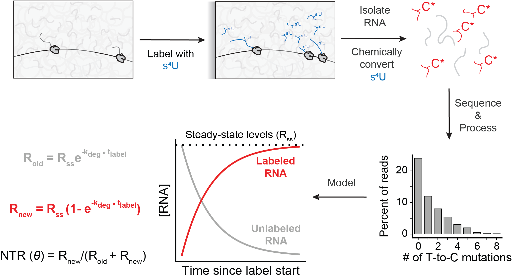
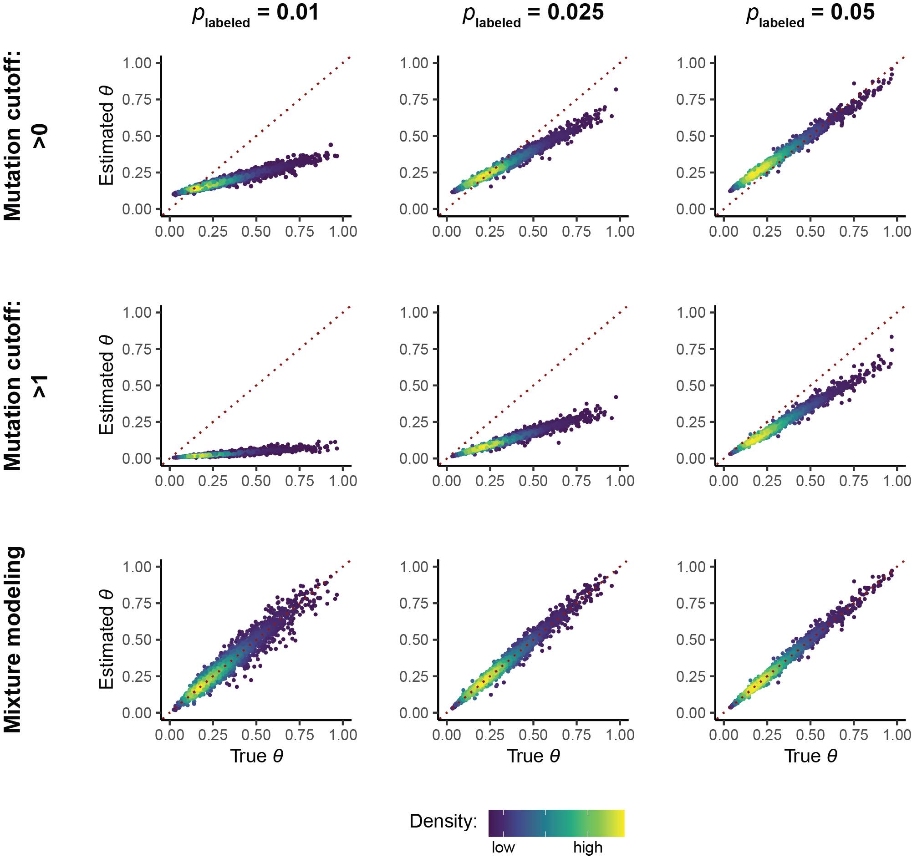
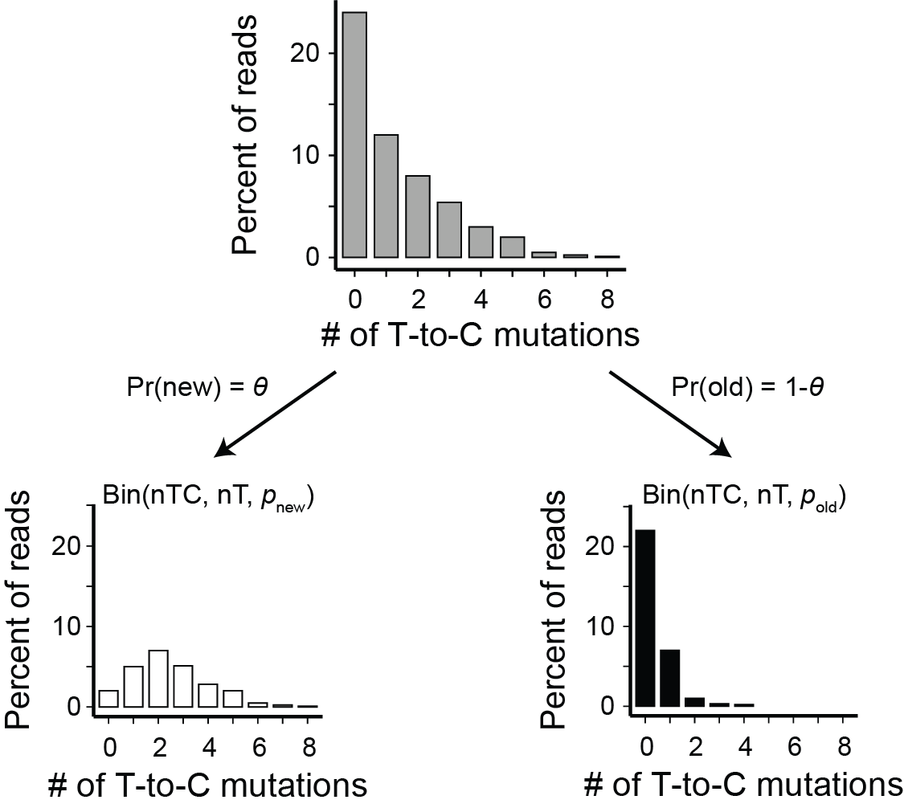
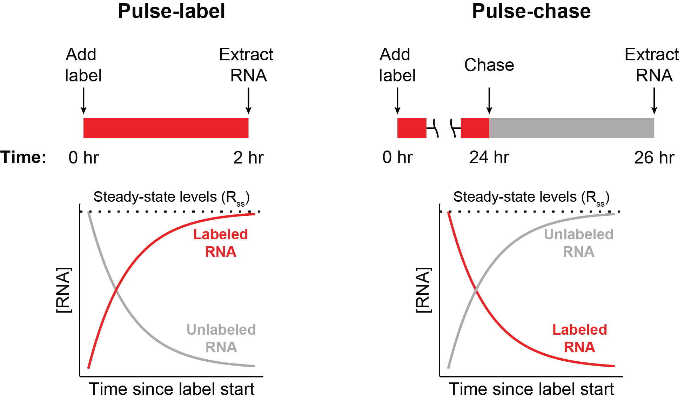

NR-seq: a review
This is a reproduction of Chapter 1 of my thesis, an in-depth technical review of NR-seq data. This version is currently incomplete (citations aren’t yet included). It is intended to be a living document that evolves as the field evolves, and will thus be occasionally updated (edit time scale: ~ monthly).
Abstract
The kinetics of gene expression are largely invisible to methods that only probe steady-state RNA abundances. Nucleotide recoding RNA-seq methods (TimeLapse-seq, SLAM-seq, TUC-seq, etc.) were developed to overcome this limitation. These methods combine metabolic labeling with unique chemistries to track the dynamics of labeled and unlabeled RNA and resolve the kinetic ambiguities of vanilla RNA-seq. Despite their promise, analyzing NR-seq data presents several unique bioinformatic challenges. While software packages exist that implement gold-standard analysis strategies, misconceptions about how to properly analyze and interpret NR-seq data persist. In some cases, this has led to the widespread adoption of potentially flawed analysis paradigms. To address this, I present a detailed overview of NR-seq analyses. I cover best practices, current software implementations, and optimal experimental design. I also discuss the landscape of NR-seq extensions, as these represent exciting areas with unique bioinformatic challenges. I hope that this will be a useful resource to the community of NR-seq users and developers.
Introduction
From birth to death, an RNA’s life cycle is tightly regulated. A key aspect of this regulation is fine-tuning of the rate at whcih each stage progresses, from transcription initiation to RNA degradation. Developing a mechanistic understanding of gene expression regulation requires methods to probe the kinetics of the RNA life cycle (transcription, processing, export, degradation, etc.).
While standard RNA-seq begins to solve this problem, it provides limited information about the kinetics of the processes which determine an RNA’s abundance. Nucleotide recoding RNA-seq (NR-seq; TimeLapse-seq, SLAM-seq, TUC-seq, etc.) overcomes these limitations. NR-seq relies on metabolic labeling, which involves feeding cells a nucleotide analog that gets incorporated into RNA synthesized after the start of labeling. The rate at which old, unlabeled RNA degrades and new, labeled RNA accumulates provides information about the kinetics of RNA metabolism (Figure 1). To determine how much of a given population of RNA is labeled, NR-seq relies on novel chemistries that recode the hydrogen bond pattern of the metabolic label to facilitate detection of labeled RNA via chemically induced mutations in sequencing reads (Figure 1). NR-seq is thus a powerful method for resolving the kinetic ambiguities of standard RNA-seq.

Unlocking the full potential of NR-seq data requires rigorous and well-founded analysis strategies. While such strategies have been put forth and implemented in a number of bioinformatic tools, misunderstanding regarding how to best interpret and analyze NR-seq data are common. Therefore, it is crucial to create gold-standard analysis guidelines for users and developers of NR-seq methods.
Towards that end, I present a comprehensive overview of the analyses of NR-seq data. I will provide a combination of accessible big-picture summaries of my main points, as well as rigorous mathematical formalism to back up key assertions. I also will conclude with a brief overview of existing extensions of the original NR-seq methodology, their applications, and unique aspects of their analyses. Throughout, I will point readers to bioinformatic tools implementing gold-standard analysis strategies while also highlighting fundamental challenges posed by NR-seq analyses. I hope that this serves as a useful resource for the larger community of NR-seq users and promotes best analysis practices in this exciting and growing field.
Summary
Below I will briefly summarize the main takeaways that are expanded upon throughout the remaining of this post. There are four unique challenges when analyzing NR-seq data: 1) estimating how many reads come from labeled RNA; 2) inferring kinetic parameters from 1); 3) aligning and processing NR-seq reads; 4) optimizing the experimental design for achieving 1) and 2). I thus divide my advice into that pertaining to each of these points:
Inferring the number of reads that come from labeled RNA:
- Mixture modeling is the most robust and accurate strategy by which to assess the fraction of reads from a given mutational population. This strategy is implemented in tools such as GRAND-SLAM, bakR, Halfpipe, and EZbakR.
- Mutation content cutoffs (e.g., classifying reads as “labeled” if they have a certain nubmer of T-to-C mutations) can yield highly biased estimates of labeled RNA abundance.
- Mixture models necessarily make assumptions about the distribution of mutations in reads from new and old RNA. It is important to assess these assumptions when interpreting mixture model fits.
- Extending the simplest two-component mixture model is promising but potentially fraught. Carefully validate improvements in model fit and stability of parameter estimates. Consider using regularization strategies to avoid unrealistic parameter estimates.
Inferring kinetic parameters:
- Unless using a label time significantly shorter than the average half-life of RNAs of interest (for example, this is around 4 hours for mRNAs in mice an dhumans), the number of reads from labeled RNA is reflective of both transcription and turnover kinetics, not just the former.
- The relative abundances of reads from labeled and unlabeled RNA is best modeled as a function of both transcription and degradation rate constants. The functional form of this relationship depends on your model for the dynamics of the RNA species you are probing.
- Assuming that the probed RNA populations are at steady-state during labeling simplifies the task of kinetic parameter estimation. This assumption can break down when labeling is done during or following a perturbation. Analysis strategies exist which relax this assumption, but they rely on having measurements of RNA abundances at the start of labeling (i.e., no-label RNA-seq data from that time point or a labeled NR-seq data in which RNA was extracted at that point). grandR and EZbakR implement both of these analysis strategies.
- Combining NR-seq with subcellular fractionation is a powerful way by which to explore the kinetics of processes invisible to whole-cell NR-seq. Analyzing this data requires a strategy to normalize read counts and integrate information across all compartments. EZbakR implements such strategies.
Processing NR-seq data:
- Aligning NR-seq reads is difficult due to the chemically induced T-to-C mismatches. While 3-base genome alignment strategies, popular in analyses of bisfulite sequencing data, are a potential solution, they often provide only minimal advantages over standard 4-base alignment approaches while also suffering from their own unique biases and limitations. This is in large part due to the fact that in NR-seq reads, most Ts are not converted to Cs. Thus, the downsides of aligning to a lower complexity genome may often nullify the benefits of not penalizing T-to-C mismatches.
- Specialized alignment approaches may provide an improvement over either a standard 3- or 4-base genome alignment approach. grandRescue is a recently developed approach that implements 4-base alignment followed by 3-base alignment of reads that fail to align via the 4-base strategy. This approach can help recover high mutation content sequencing reads.
- When processing NR-seq data, you have a choice to make about what genomic features you want to assign reads to and perform analyses on. Most tools support performing analyses at the gene- (or 3’-UTR if using 3’-end sequencing) level, but fastq2EZbakR significantly expands the set of features you can analyze to incldue transcript isoforms, exon-exon junctions, etc.
Experimental design:
- Label-free control samples (a.k.a. no-label controls) are crucial to detect potential biases introduced by labeling (e.g., dorpout of labeled RNA).
- No-label controls can be used to both assess and correct for these biases in some cases. grandR and EZbakR provide strategies for this task.
- Bias correction strategies make assumptions like any statistical method, and these assumptions should be assessed when interpreting the output of bias correction.
- While unique analysis strategies have been proposed that may be strictly compatible with pulse-chases, pulse-chases suffer from the following serious shortcomings:
- Prolonged exposure to metabolic label, which can lead to adverse effects
- Increased variance in kinetic parameter estimation due to having to compare the estimated fraction of reads that are labeled at the end of the pulse to that at the end of the chase. Compare this with a steady-state pulse-label analysis where the only source of variance is that of the fraction labeled estimate for the pulse.
- The analysis is complicated by the potential for incomplete competition of metabolic label with the chase nucleotide and recycling of metabolic label from degraded RNA.
- Higher cost due to the necessity of more samples (set of pulses and set of chases).
- The best label time for standard NR-seq kinetic parameter inference is around the median half-life of the RNAs you wish to probe the kinetics of. It’s better to undershoot than overshoot this target though to avoid adverse effects of prolonged metabolic labeling.
- Accurate kinetic parameter estimates are obtainable with standard RNA-seq sequencing depth. More depth can significantly improve these analyses though. Sequencing depth is particularly important if wanting ot perform analyses on the sub-gene (e.g., exon-exon junction) level.
Additionally, an exciting advance in the NR-seq field is the number of unique extensions that have been developed to apply nucleotide recoding to the study of several aspects of RNA dynamics. This review concludes with a summary of currently published NR-seq extensions.
A brief history of NR-seq
One of the first strategies to assess the kinetics of RNA synthesis and degradation combined global transcriptional inhibition with RNA-seq. RNA levels following a time coruse of inhibition could be fit to exponential decay curves to assess turnover kinetics in high-throughput. Combining this with pre-inhibition abundance information allows one to assess synthesis kinetics. While this approach continues to be widelly used, it suffers from a number of drawbacks. For one, rigorous normalization is needed to track the decreasing absolute levels of RNA. As RNA-seq only provides a relative measure of RNA abundance, this typically requires exogenous spike-ins to account for the global differences in RNA abundance between inhibition timepoints. This introduces additional experimental complexity that requires optimization. In addition, global transcription inhibition causes the cells to launch myriad stress responses, many of which affect transcript stability. This represents a confounder that complicates the interpretation of transcriptional inhibition data. Thus, a strategy to probe the kinetics of RNA without significant perturbation of the system was needed.
Metabolic labeling with nucleotide analogs offers one such strategy. Cells will incorporate these labels into nascent RNA, leading to the existence of two distinct populations of RNA: unlabeled, old RNA that existed at the start of labeling and new RNA that had the potential to incorporate metabolic label. Tracking the dynamics of these two populations yields the information necessary to dissect transcription and degradation kinetics of each RNA in a population of cells. Originally, doing so required biochemically separating the two populations and sequencing each (or more specifically enriching for one and sequencing the enriched and input samples). This either relied on chemistries that conjugated biotin to incorproated labels so that labeled RNA could be separated from unlabeled via a biotin-streptavidin pull down, or immunoprecipitation via antibodies that specifically recognize the metabolic label. While powerful, these enrichment-based techniques require substantial amounts of starting RNA, introduce biochemical biases during enrichment, and cannot distinguish the desired enriched RNAs from nontrivial levels of contamination. Labeled and unlabeled spike-ins have been proposed to quantify and account for some of these challenges, but hese introduce their own experimental challenges and are unable to account for length biases in the enrichment. Further innovation was thus required to improve the robustness of metabolic labeling strategies.
Several labs (including the Simon lab, where I did my PhD) addressed these shortcomings by developing nucleotide recoding RNA-seq methods (NR-seq). These techniques combine s4U metabolic labeling and nucleotide recoding chemistry (TimeLapse, SLAM, TUC, etc.) to either convert or disrupt the hydrogen bonding pattern of incorporated s4U. This yields apparent T-to-C mutations in the RNA-seq data that indicate sites of s4U incorporation and can be used to estimate the fraction of extracted RNA that was synthesized after the introduction of metabolic label. This adds kinetic information to the snapshot provided by RNA-seq while eliminating the need for enrichment of labeled RNA. A simplified schematic of NR-seq data and its analysis is presented in Figure 1. T-to-C mutations in sequencing reads can be used to bioinformatically quantify the levels of labeled and unlabeled RNA, with the Simon lab originally introducing the now gold-standard mixture modeling approach for this task. Simple kinetic models of the trajectories of these two species relate the kinetic parameters of interest to the data obtained. This is how NR-seq can quantify the kinetics of gene expression.
Analyzing NR-seq data
Here I discuss how to analyze processed NR-seq data before discussing the details of NR-seq data processing. This will allow me to better motivate the importance of optimally processed NR-seq data. This means I will assume that you have information about how many instances of a given read-vs-reference mismatch type (e.g., T-to-C mismatches) were in each read, and how many mutable nucleotides were in the reference sequence to which this read aligned (e.g., number of reference T’s). Throughout these and later sections, my discussion will assume a pulse-label (vs. a pule-chase) design was utilized, as the optimality of this approach will be discussed later.
Modeling the mutational content of sequencing reads
In NR-seq data, two populations of sequencing reads exist: those originating from RNA synthesized prior to metabolic labeling (the unlabeled RNA; old RNA in a pulse-label design), and those originating from RNA synthesized during metabolic labeling (the labeled RNA; new RNA in a pulse-label design). On average, the mutational content of the latter will be higher than that of the former. Analyzing NR-seq dat requires making use of this fact to infer the fraction of reads coming from each of these two populations for a given read.
Originally, two ideas were proposed. The simplest was to use a mutation content cutoff to classify reads as coming from labeled or unlabeled RNA. In other words, all reads with N or more (N usually being 1 or 2) mutations were classified as “labeled”, and all other reads were classified as “unlabeled”. This strategy is intuitive and computationally efficient. Despite this, it suffers from some serious shortcomings. For one, the mutational content of reads from labeled RNA is largely a function of three factors: 1) the U-content of the region of the RNA from which the read is derived, 2) the metabolic label incorporation and chemical recoding efficiencies, and 3) the background mutation rate. While the background mutation rate is often fairly constant across samples and RNAs, the other two factors are subject to large amounts of read-to-read and sample-to-sample variability. For example, different RNAs can have very different average U-contents. In addition, perturbing cellular metabolism often decreases label incorporation rates. This latter point is an especially concerning batch effect, as it can cause the mutation content of reads from a given feature to vary not because the amount of labeled RNA differs between two conditions, but because the incorporation rate is lower in one condition versus the other. The result is that mutation content cutoffs often provide a simple but biased estimate for the amount of labeled RNA from a given feature.
A more robust analysis strategy is mixture modeling. In this strategy, assumptions are made about the distributions that best describe the expected mutational content from labeled and unlabeled RNA. For eample, the number of mutations in reads from these two populations could be modeled as following a Poisson distribution with some mean, a mean which is necessarily higher in the labeled RNA reads than the unlabeled RNA reads. Due to the high amounts of read-to-read variance in U-content though, modeling the mutational content as a binomial distribution that takes into account both the incorporation/recoding rate as well as the read’s U-content is optimal. This strategy (or slight variants of it), known as two-component binomial mixture modeling (TCBMM), was thus implemened in analysis software such as GRAND-SLAM, bakR, HalfPipe, and EZbakR. Mixture modeling has been shown to provide unbiased estimates of labeled RNA abundance, even in the face of relatively low incorporation/recoding rates (Figure 2).

The likelihood function for TCBMM (Figure 3) can be generalized as such:
\[ \begin{gather} L(\theta, p_{\text{new}}, p_{\text{old}}) = \theta \cdot \text{Binomial}(\text{nM}, \text{nN}, p_{\text{new}}) + (1 - \theta) \cdot \text{Binomial}(\text{nM}, \text{nN}, p_{\text{old}}) \\ \text{Binomial}(\text{nM}, \text{nN}, p_{\text{old}}) = \binom{\text{nN}}{\text{nM}}p^{\text{nM}}(1-p)^{\text{nN} - \text{nM}} \\ \theta = \text{fraction of reads from labeled RNA (aka the new-to-total ratio, or NTR)} \\ \text{nM} = \text{number of mutations (e.g., T-to-C mutations in a standard }\text{s}^{4}\text{U} \text{ NR-seq analysis)} \\ \text{nN} = \text{number of mutable nucleotides (e.g., Ts in a standard }\text{s}^{4}\text{U} \text{ NR-seq analysis)} \\ p_{\text{new}}, p_{\text{old}} = \text{mutation probability in reads from new (labeled) and old (unlabeled) RNA} \end{gather} \]

Modifying TCBMM
The power of mixture modeling lies in both its robustness as well as its extensibility. TCBMM makes several assumptions about the mutational content of NR-seq reads; namely that:
- Every uridine in an RNA synthesized in the presence of label was equally likely to get replaced with s4U. This is formalized above by there being only one \(p_{\text{new}}\).
- Every sequenced uridine in an unlabeled RNA was equally likely to give rise to a non-s4U-related mutation due to sequencing errors, alignment errors, etc. This is formalized above by there being only one \(p_{\text{old}}\).
- By default, all existing tools (GRAND-SLAM, bakR, HalfPipe, and EZbakR) assume that the mutation rate in reads from labeled and unlabeled RNA are sample-wide global parameters. That is, all RNAs transcribed from all genes are assumed to have the same rate of s4U incorporation, and reads from these RNAs are subject to the same background mutation rate. Thus\(p_{\text{new}}\) and \(p_{\text{old}}\) are assumed to be the same for all genes in the above formalism.
If users find one or more of these assumptions to be violated, they can attempt to modify and extend this model. Towards thate end, several modification of standard TCBMM have been proposed. These include:
- Three-component mixture modeling, where a second population of reads from unlabeled RNA with a higher mutation rate (presumably due to heightened alignment errors) is modeled.
- Overdisperse mixture modeling where an overdisperse binomial distribution (e.g., a beta-binomial) replaces one or both of the binomial distribution components, or where a different incorporation rate parameter is estimated for fast and slow turnover RNA.
- Hierarchical mixture modelign where a sample-wide average incorporation rate is inferred and used as a strongly regularizing prior to estimate feature-specific incorporation rates.
- Modeling the transcription process, which at short label times leads to an expected position-dependency in the incorporation rate.
While all of these are theoretically promising, the challenge of fitting more complex models is two-fold. 1) Their increased flexibility comes with an increased risk of overfitting. This can lead to estimate instability, where a better model fit yields extreme conclusions about RNA dynamics (e.g., unusualy high fraction new and thus unrealistically rapid turnover kinetics). 2) While an alternative model may capture one aspect of the true data generating process unaccounted for by TCBMM, it may amplify biases that arise from not accounting for some other aspect of the data generating process.
To illustrate point 1, consider the task of fitting a TCBMM with feature-specific mutation rates. While in theory, it is straightforward to obtain maximum likelihood estimates for the parameters of such a model, model flexibility can make interpretation of maximum likelihood parameters fraught. Intuitively, this is because changing different parameters can have similar expected impacts on your data. A higher fraction new will yield more reads with high mutational content, but so will a low fraction new combined with a higher background mutation rate. While with enough reads these two situations can be accurately deconvolved, this analysis is highly uncertain for low coverage features.
To illustrate point 2, consider the idea of three-component mixture modeling. While this can capture certain types of overdispersion in mutation rates from old RNA reads, it can amplify biases from not modeling overdispersion in mutation rates from new RNA reads. A three-component mixture model will classify many moderate mutation rate reads as “old”, when in fact they may represent a preponderance of low mutation rate new reads. This kind of overdispersion is made even more likely by the fact that metabolic label availability will likeloy ramp up and down over time. Thus, reads from RNA synthesized at different time points may have different true mutation rates.
How can one navigate building more complex models while avoiding some of these problems? Point 1 can be addressed through regularization. From a Bayesian perspective, this means using one’s domain expertise or trends in these high-throughput datasets to craft informative priors that constrain the parameter search space. For example, to fit a hierarchical mixture model in EZbakR, where each feature is allowed to have its own new read mutation rate (\(p_{\text{new}}\)), I crafted a strategy to infer strongly regularizing priors from sample-wide trends. These priors were designed to be very conservative to limit estimate variance.
Point 2 represents the fundamental challenge of statistical modeling: crafting a model of the data generating process that faithfully captures most of the relevant sources of variance in one’s data. This is difficult, but several strategies exist to navigate this complexity. Information criteria are a popular metric by which to compare fits of a more complex model to that of a simpler model. These criteria are designed to penalize model complexity to avoid rewarding overfit models with better metrics. While simple criteria like the Akaike information criteria (AIC) are popular due to their implementation ease, more robust metrics have been developed since the advent of AIC. For example, in the context of mixture modeling, the widely applicable information criteria (WAIC; a.k.a. the Watanabe-Akaike Information Criteria) may provide a number of advantages over AIC.
Information criteria are not panacea though. Information criteria are rigorous ways to assess if added model complexity is capture a significant amount of variance in your data that a simple model fails to account for. Even if a more complex model is succeeding by this metric, it could still be providing biased estimates. Thus, when designing new NR-seq models, I suggest a multi-pronged approach that weighs several metrics when deciding if a more complex model is worth using. If adopting a Bayesian approach, information criteria can be complemented with posterior predictive checks, where data is simulated from the fit model and compared to the analyzed data. Serious discrepancies between simulated and real data can reveal model mis-specifications and guide model improvement. We also suggest comparing results given by standard TCBMM with those provided by a more complex model. Extreme sample-wide discrepancies between the two may signify that the more complex model is overfitting or providing unstable estimates. Discrepancies should thus be thoroughly explored and explained. Finally, we suggest assessing model robustness through simulations from a data generating process more complicated than that used for model fitting. If the bias introduced by these true vs. assumed data generating process discrepancies is amplified by use of a more complex model relative to TCBMM, we urge cautio nin adopting the more complex model. The simplicity and robustness of TCBMM makes it an effective baseline with which to compare alternative models.
Transcript isoform analyses of short-read data
Transcript isoforms are the RNA species whose synthesis and degradation kinetics are of biological significance. Despite this, quantifying the NTRs of individual transcript isoforms in a short-read NR-seq experiment is challenging. This is because most short reads cannot be unambiguously assigned to a specific transcript isoform. Strategies have been developed to overcome these challenges in the context of quantifying the abundances of isoforms. I thus recently developd a similar approach to estimate isoform-specific NTRs in short read NR-seq data.
The approach, implemented in the EZbakR suite, combines standard NR-seq TCBMM with transcript isoform quantification. This approach estimates NTRs for each observed transcript equivalence class (TEC; i.e., the set of isoforms with which a read is compatible) and integrates this with estimates of transcript isoform abundances from standard tools for this task. EZbakR is able to estimate isoform-specific NTRs by deconvolving TEC NTRs using a novel beta mixing model. I used this approach while in the Simon lab, and in collaboration with Bobby Hogg’s lab at the NIH, to study the synthesis and degradation kinetics of individual transcript isoforms, and to identify NMD sensitive isoforms.
Accurate transcript isoform analyses require annotations of expressed isoforms. In our work presenting the isoform-NTR estimation strategy, we noted that standard off-the-shelf references did not faithfully reflect our particular cell line’s transcriptome. We thus explored strategies using StringTie2 and custom filtering to build more accurate, bespoke annotations. We showed that this approach significantly improved the accuracy of transcript-isoform level analyses. While a powerful approach, the need to build custom annotations adds to the complexity of the workflow. In addition, tools for building such annotations are not without their limitations, as ab initio assembly is a fundamentally difficult task. Having matched, unlabeled, long read data can improve assembly, but presents its own challenges and shortcomings. Thus, while isoform-level analyses represent a poewrful new paradigm in analyses of NR-seq data, I urge users to carefully assess the potential of annotation-related biases in their analyses.
Modeling and correcting for dropout in NR-seq data
Like all other RNA-seq based methods, NR-seq data can be plagued by various biases. The most prominent example of this is dropout, a phenomenon observed across many distinct datasets. Dropout is the underrepresentation of reads from labeled RNA. While its origins are not fully understood, it has been proposed to be caused by a combination of disproportionate loss of labeled RNA during RNA extraction and library preparation, loss of high mutation content reads during alignment, and toxicity due to s4U labeling.
Dropout in NR-seq data can be detected and quantified with the help of no-label controls. A no-label control refers to data from samples not fed with a metabolic label. These are important controls that should be included in all NR-seq datasets. A simple model of dropout is that there exists a global rate at which label-containing RNA is lost relative to unlabeled RNA, referred to as the dropout rate. Thus, rapidly turned over RNA that are more highly labeled will be disproportionately affected compared to more stable, relatively unlabeled RNA. Comparing the estimated turnover rate in the labeled samples to the no-label vs. labeled read counts can thus reveal dropout. More specifically, dropout looks like a strong correlation between these quantities. Plots like those shown in Figure 4 can be easily made with both grandR and EZbakR.

If your NR-seq data suffers from non-trivial amounts of dropout, you can employ strategies to correct for dropout. grandR was the first tool to implement such a strategy. It follows from a model alluded to above and assumes that there is a sample-wide rate (call it \(\text{p}_{\text{do}}\)) at which labeled RNA is disproportinately lost relative to unlabeled RNA. If this is the case, then then true fraction of reads from labeled RNA (\(\theta_{\text{true}}\)) is related to the dropout-biased estimate (\(\theta_{\text{do}}\)) like so:
\[ \begin{gather} \theta_{\text{true}} = \frac{\theta_{\text{do}}\cdot\text{p}_{\text{do}}}{\theta_{\text{do}}\cdot\text{p}_{\text{do}} + (1-\theta_{\text{do}})} \end{gather} \]
Similarly, a relationship exists between the true expected read counts from a given feature and the observed, labeled sample read count:
\[ \begin{gather} \text{R}_{\text{true}} = \text{R}_{\text{do}} \cdot \frac{\theta_{\text{G}}\cdot(1-\text{p}_{\text{do}}) + (1-\theta_{\text{G}})}{\theta_{\text{true}}\cdot(1-\text{p}_{\text{do}}) + (1-\theta_{\text{G}})} \\ \theta_{\text{G}} = \frac{\theta_{\text{G,do}}}{(1-\text{p}_{\text{do}}) + \theta_{\text{G,do}} \cdot \text{p}_{\text{do}}} \\ \theta_{\text{G,do}} = \frac{\sum_{\text{j=1}}^{\text{NF}} \theta_{\text{do,j}} \cdot \text{R}_{\text{j}}}}{\sum_{\text{j=1}}^{\text{NF} \text{R}_{\text{j}}} \end{gather} \]
Using these theoretical relationships, a dropout rate can be estimated that, after correcting read counts, yields no correlation between the labeled vs. no-label read count ratio and the turnover kinetics of an RNA. This strategy is implemented in grandR. bakR implements a similar strategy by which the relationship between dropout and the NTR is modeled and fit with the method of maximum likelihood. EZbakR implements both of these strategies.
Dropout correction is a powerful addition to the NR-seq analysis toolkit. Despite this, it is not without its limitations. The requirement for matched no-label samples in all conditions tested adds to the experimental burden. In addition, even when no-label data is colelcted, resource constraints often lead researchers to only collect a single replicate of this data, as it is not itself a useful NR-seq sample. This can make the dropout metric, the ratio of labeled:no-label read counts, noisy.
To address these limitations, EZbakR implements a strategy I refer to as dropout normalization. Dropout normalization does not require any no-label data and involves comparing internally normalized NTRs rather than read counts across samples. The strategy starts by identifying the lowest dropout sample (e.g., that which provides the lowest median uncorrected half-life estimate) and estimating dropout in other samples relative to this sample. This estimated relative dropout rate is then used to correct NTRs and read counts in all samples. This strategy has proven particularly useful as dropout rates often correlate with biological conditions, which risks confounding comparative analyses if not properly accounted for. The downside of dropout normalization is that it tends to normalize out global differences in half-life estimates, even if tehse are biologically real and not solely the result of dropout. Dropout is thus similar in spirit to RNA-seq read count normalization methods such as the median-of-ratios or TMM, as well as a simpler median-kdeg normalization strategy implemented in grandR, which all effectively assume that there are no real global differences in RNA levels/turnover kinetics across samples. Dropout normalization alternatively assumes that any global changes in RNA turnover kinetics are dropout driven. Users should thus be aware of this assumption when using dropout normalization.
Kinetic parameter estimation with NR-seq data
One of the original motivations for developing NR-seq was to robustly estimate the kinetics of RNA synthesis and degradation. In this section, I discuss the modeling and assumptions necessary to make this possible.
Standard kinetic analyses
Vanilla, bulk NR-seq is a powerful method by which to quantify the kinetics of RNA synthesis and degradation. A typical kinetic analysis means modeling the NTR of reads from a feature (e.g., the union of exons at a gene) as a function of the RNA’s synthesis and degradation rate constants. The simplest identifiable model of this sort assumes that mature mRNA is synthesized at a rate \(\text{k}_{\text{syn}}\) and degraded with a rate constant \(\text{k}_{\text{deg}}\). This model can be formalized via the following analytically tractable differential equation:
\[ \begin{gather} \frac{\text{dR}}{\text{dt}} = \text{k}_{\text{syn}} - \text{k}_{\text{deg}} \cdot \text{R} \\ \text{Solution (with R(0) = 0)}: \text{R(t)} = \frac{\text{k}_{\text{syn}}}{\text{k}_{\text{deg}}} \cdot (1 - \text{e}^{\text{k}_{\text{deg}} \cdot \text{t}}) \\ \end{gather} \]
At steady-state, the following relationships hold:
\[ \begin{gather} \frac{\text{dR}}{\text{dt}} = 0;\text{ }\text{R}_{\text{ss}} = \frac{\text{k}_{\text{syn}}}{\text{k}_{\text{deg}}} \\ \text{NTR} = \frac{\text{R(tl)}}{\text{R}_{\text{ss}}} = 1 - \text{e}^{\text{k}_{\text{deg}} \cdot \text{t}} \\ \text{k}_{\text{deg}} = \frac{-\text{ln}(1-\text{NTR})}{\text{t}_{\text{label}}} \end{gather} \] This model makes several explicit assumptions:
- Steady-state: this means that during the labeling, RNA levels are not changing. While individual cells may rarely ever be at steady-state, e.g., as transcript levels are regulated throughout the cell cycle, in bulk NR-seq this means assuming that the average RNA levels across all cells assayed are constant.
- Zeroth-order synthesis kinetics (i.e., transcription is a Poisson process): this means that there exists a single, constant rate of transcription during the labeling. While once again often violated in single cells due to phenomena such as transcriptional bursting, it is likely a decent model of bulk transcriptional behavior.
- First-order degradation (i.e., exponential decay): this means that RNAs have a characteristic half-life that does not change over either the course of the labeling or their lifetime. This means assuming that RNAs are “ageless” or that the probability an RNA degrades in the next instance is independent of how long it has been around. This assumption breaks down if multiple rate-limiting steps separate an RNA’s birth from its detah (e.g., if RNA export from the nucleus is on a similar time-scale of cytoplasmic degradation), or if there exist multiple sub-populations of RNA with different decay kientics (e.g., if nuclear mRNA is degraded at a different rate than cytoplasmic mRNA). While this assumption is inevitably violated to some extent due to the complexity of the RNA life cycle, it has consistently proven to be a reasonable approximation in a variety of settings, while still providing a useful (if somewhat biased) picture of general turnover kinetics when it is violated.
Non-steady-state modeling
The steady-state assumption makes analyzing and interpreting NR-seq data easy. Despite this, it is often violated in contexts where you are applying a perturbation to cells shortly before or during labeling. Narain et al. proposed a strategy to obtain unbiased estimates even in this setting. The intuition behind how this approach works is that no matter what, the dynamics of old (unlabeled) RNA is entirely a function of turnover kinetics. Thus, if you know the levels of an RNA at the start of labeling, then that combined with its level at the end of labeling tells you how much RNA decayed in that time frame. Formally:
\[ \begin{gather} \text{R}_{\text{old}}(\text{t}) = \text{R}_{\text{init}} \cdot e^{-\text{k}_{\text{deg}} \cdot \text{t}} \\ \text{R}_{\text{new}}(\text{t}) = \frac{\text{k}_{\text{syn}}}{\text{k}_{\text{deg}}} \cdot (1 - e^{\text{k}_{\text{deg}} \cdot \text{t}}) \\ -\frac{\text{ln}(\frac{\text{R}_{\text{old}}(\text{t}_{\text{label}})}{\text{R}_{\text{init}}})}{\text{t}_{\text{label}}} = \text{k}_{\text{deg}} \\ \frac{\text{R}_{\text{new}}(\text{t}_{\text{label}})}{1-e^{\text{k}_{\text{deg}} \cdot \text{t}}}\cdot \text{k}_{\text{deg}} = \text{k}_{\text{syn}} \end{gather} \]
An estimate for \(\text{R}_{\text{init}}\) typically comes from matched RNA-seq data collected at a time point equivalent to that at which labeling was started for a given labeled sample. Note, the stability or synthesis rate of an RNA could be changing during the labeling. The \(\text{k}_{\text{deg}}\) and \(\text{k}_{\text{syn}}\) estimates from this strategy should thus be thought of as the time-averaged value of a potentially time-varying \(\text{k}_{\text{deg}}(\text{t})\) and \(\text{k}_{\text{syn}}(\text{t})\). Both grandR and EZbakR implement this analysis strategy.
While having an approach that yields theoretically unbiased estimates of turnover and synthesis kinetics even in the face of non-steady-state dynamics is powerful, it is not without its limitations. For one, a unique experimental design is required. If you are missing RNA-seq data from the start of any labeling period, this strategy cannot be applied. In addition, even with the proper experimental design, this analysis approach has some weaknesses. Its statistical properties are suboptimal relative to the steady-state analysis. In particular, the variance of the \(\text{k}_{\text{deg}}\) estimation is typically higher than that of the steady-state estimate, especially at low NTRs (Figure 5). Intuitively, this is because the steady-state estimate is only a function of a single sample’s NTR, while the non-steady-state estimate requires comparing an NTR estimate combined with a normalized read count in one sample to a normalized read count in another sample. Thus, while the estimate is technically unbiased, its mean-squared error is not necessarily lower than that of the biased steady-state analysis. This problem can partially be addressed through greater sequencing depth, label time optimization, and more replicates, but it is a challenge that users should be aware of.

Subcellular NR-seq
Several studies have combined NR-seq with subcellular fractionation to invesigate the kinetics of subcellular RNA trafficking. To date, such efforts have included sequencing chromatin-associated RNA, nuclear RNA, cytoplasmic RNA, ribosome-associated RNA, and membrane-associated RNA. These data necessitate fitting more complex kinetic models to multi-sample datasets. While Halfpipe was the first tool to support analyses of one particular fractionation scheme, EZbakR is the first tool designed to support fitting any such model.
EZbakR makes use of the fact that the most common identifiable models of RNA dynamics that subcellular NR-seq has been used to fit can be formalized as a linear system of ordinary differential equations (ODEs) of the form:
\[ \begin{gather} \textbf{R} = \text{M} \cdot \dot{\textbf{R}} + \textbf{b} \\ \textbf{R} = \text{vector of RNA species abundances of length N} \\ \text{M} = \text{NxN matrix of first-order kinetic parameters} \\ \dot{\textbf{R}} = \text{time derivative of } \textbf{R} \\ \textbf{b} = \text{vector of zeroth-order rate constants (e.g., synthesis rate)} \end{gather} \]
Any such system of ODEs has an analytic solution inferrable from the matrix M and forcing vecetor \(\textbf{b}\). EZbakR makes use of this fact to efficiently fit these models without needing to rely on numerical integration. It also provides means for uncertainty quantification that is capable of flagging instances of practical unidentifiability, i.e., when specific parameters of a model are outside of the dynamic range of what can be reasonably estimated given experimental details and noise.
EZbakR also implements a novel strategy by which to normalize certain classes of subcellular NR-seq. This strategy relies on having data from individual fractions, as well as a sufficient set of combinations of fractions (e.g., nuclear, cytoplasmic, and whole cell). It uses the fact that the total fraction of reads in each of the sub-compartments that are new (when adjusted for average length differences in the RNA populations) is related to the same quantity in the combination compartment. The scale factor that relates these quantities is precisely the ratio of absolute abundances between the sub-compartments. For the whole-cell, nuclear, and cytoplasmic example, this relationship looks like:
\[ \begin{gather} \theta_{\text{WC}} = \frac{[\text{C}]}{[\text{C}] + [\text{N}]}\theta_{\text{C}} + \frac{[\text{N}]}{[\text{C}] + [\text{N}]}\theta_{\text{N}} = s\cdot\theta_{\text{C}} + (1-s)\cdot\theta_{\text{N}} \\ \theta = \text{total fraction of reads from new RNA in a given compartment} \\ \text{WC = whole-cell; C = cytoplasm; N = nucleus} \\ [\text{C}] = \text{absolute levels of cytoplasmic RNA} \\ [\text{N}] = \text{absolute levels of nuclear RNA} \end{gather} \]
An appropriate RNA-seq read count normalization scale factor can be inferred from the value of \(s\). While this strategy requires having NR-seq in all the necessary sub- and combination-compartments, recent work suggests that it may be possible to relax this requirement and instead only require at least standard RNA-seq data for all such compartments.
Processing NR-seq data
The previous sections assumed that we had optimally processed NR-seq data. In this section, I discuss how to obtain such data and the challenges involved.
Aligning NR-seq data
The first data processing step with NR-seq-specific challenges is aligning reads to the genome. The mutations introduced by recoding chemistries make this more challenging than in standard RNA-seq. These mismatches risk yielding inaccurate alignments or causing some reads to be unmappable.
SLAMDUNK, one of the first bioinformatic pipelines developed for processing NR-seq data, utilized the NextGenMap aligner to overcome this challenge. NextGenMap is a non-splice aware aligner that provides an alternative mismatch scoring function designed for NR-seq data. This scoring function penalizes all but T-to-C mismatches, ameliorating the negative impact of these mismatches on alignment accuracy. In addition, SLAMDUNK is optimized for 3’-end sequencing data. Because of this, it is able to reduce the sequence search space by aligning to the set of annotated 3’-UTRs rather than the entire genome. SLAMDUNK also implements a unique multi-mapping read assignment strategy that preferentially assigns ambiguous reads to the more likely 3’-UTR. Despite being designed for 3’-end sequencing, some have used SLAMDUNK to process full-length NR-seq data. While NextGenMap’s lack of splice awareness makes it impossible to accurately align reads from these libraries to a genome, one can instead opt for alignment to a transcriptome. This has a number of downsides (e.g., improper alignment of intron mapping reads) but can still provide reasonable results.
For full-length NR-seq data, standard splice-aware aligners like STAR and HISAT2 were originally preferred. Using these tools typically requires relaxing the default mismatch penalization. Unlike in NextGenMap, no such aligner allows for this to be done in a mismatch type-specific manner (technically BASAL, a recently developed aligner, can also do this, but it cannot provide the unique MD bam file tag that is required for all existing NR-seq pipelines). This leads to a necessary reduction in alignment accuracy to retain high mutation content reads. To address this challenge, HISAT-3N was developed, which aligns reads to a 3-base genome, i.e. a genome where all Ts are converted to Cs. By similarly convertins Ts i nall reads to Cs, reads could be aligned without penalizing T-to-C mismatches. While this has been useful in recovering high mutation content reads, it is not without its own unique downsides. The lower complexity genome increases the likelihood that a read does not uniquely map to a given locus, and can more generally reduce the accuracy of read alignment. Recently, a rigorous simulation benchmark was performed to compare HISAT-3N and STAR alignment of NR-seq data. It concluded that neither is strictly superior to the other, with each having unique strengths and weaknesses. It remains to be seen if the same holds true for more recent 3N-aligners like rmapalign3N. As STAR is more widely used and actively maintained aligner than HISAT-3N, we and others typically opt for STAR when aligning full-length RNA NR-seq data.
Ideally, a strategy would exist to get the best of both 4- and 3-base alignment. Towards that end, grandRescue was developed. grandRescue first aligns reads with STAR to a 4-base genome. Then, reads that failed to align are aligned with STAR to a 3-base genome (while HISAT-3N makes 3-base genome alignment convenient, it is technically possible with any aligner. grandRescue provides the necessary helper functions to make this user friendly). This allows grandRescue to outperform both STAR and HISAT-3N on the task of accurately aligning high mutation content reads from full-length NR-seq data. It also showed improved alignment accuracy over NextGenMap transcriptome alignment. While grandRescue has not yet reached STAR’s level of bioinformatic maturity, it introduced a powerful paradigm for the accurate alignment of NR-seq reads.
Counting mutations
Once NR-seq reads have been aligned to a genome, many of the additional processing steps are shared with standard RNA-seq analyses. Despite this, a unique aspect of NR-seq data processing post-alignment is mutation counting.
NR-seq reads from labeled RNA will on average contain more mutations of a particular type than those from unlabeled reads. Thus, quantifying the number of mutations of the relevant type (e.g., T-to-C mutations in standard s4U NR-seq experiments) is a key compoennt of any NR-seq pipeline. Unfortunately, there are no flexible, general-purpose bioinformatic tools specifically for this purpose. Instead, every NR-seq pipeline typically reimplements a solution to this problem from scratch. SLAMDUNK is the closest exception, as it includes a mutation counting module that in theory could be slotted into other NR-seq pipelines. Despite this, SLAMDUNK’s mutation counting module makes some rigid assumptions (e.g., single-end, forward stranded libraries) that make it difficult to use in many situations. In addition, SLAMDUNK does not currently provide read-specific mutation counts and instead provides feature-wide summarization of this information. This makes it incompatible with optimal downstream analyses (namely mixture modeling; see the earlier section on “Modeling the mutation content of sequencing reads”). Finally, SLAMDUNK can only provide information about T-to-C mutational content, making it incompatible with s6G NR-seq datasets
fastq2EZbakR and GRAND-SLAM lack the modularity of SLAMDUNK, but are compatible with a wider array of NR-seq library types. Both can quantify T-to-C and G-to-A mutations. fastq2EZbakR is additionally able to count any combination of all mutation types. This allows these tools to support s6G-based NR-seq assays, and in the case of fastq2EZbakR, even potentially support the wider array of mutation-based chemical probing experiments.
A general feature of most NR-seq processing tools is the ability to mask single nucleotide polymorphisms (SNPs) when counting mutations. Despite its ubiquity, the relative efficacy of different mutational artifact calling strategies in NR-seq data is understudied. Several approaches have been suggested, including a simple cutoff of the fraction of times a given nucleotide is identified as having a mismatch with the reference, or the use of established variant calling software like VarScan or BCFtools. Also, while SNP calling has been shown to significantly impact analyses relying on simple mutation-content cutoffs for quantifying labeled read abundances, mixture modelign may be more robust to high background mutatio nrates and uncalled SNPs. Despite this, systematic, non-random mutations may violate the assumptions of independence underlying popular mixture modeling strategies, especially in lower complexity libraries like those from 3’-end sequencing, highlighting the potential importance of SNP-making and its continued optimization.
Feature assignment
NR-seq reads often must be assigned to the annotated features (e.g., genes) to which they belong. Read-by-read feature assignment can then be combined with mismatch calls to estimate the feature’s NTR and metabolic kinetic parameters. While most NR-seq pipelines provide a limited set of features to which this assignment can be done, fastq2EZbakR recently significantly expanded the flexibility of NR-seq feature assignment. fastq2EZbakR can assign reads to genes (exons and introns), exclusively exonic regions of genes, exonic bins, transcript equivalence classes, and exon-exon junctions. While some analyses of NR-seq only require standard gene-level quantification, fastq2EZbakR’s expanded set of feature assignment strategies allows for a higher resolution dissection of RNA dynamics.
Processed data format
What is the best way to store and format processed NR-seq data? For most analyses of vanilla RNA-seq data, the answer to this question is a count matrix. For each feature analyzed and each sample collected, a count matrix notes the number of times a read came from that feature in that sample or tracks some more sophisticated measure of that feature’s abundance. Count matrices are the ideal processed RNA-seq data format for several reasons. Their size largely scales with the number of samples, not the depth of sequencing. This is because the number of annotated features in a given organism (i.e., the number of rows of the count matrix) is mostly fixed, and no matter how many reads you have in a given sample, each feature will end up with a single number for each sample. This format also lends itself to highly efficient linear algebra operations and is widely used in a number of bioinformatic libraries. Thus, one could argue that a similar procssed data format should be used for NR-seq.
Towards that end, several popular NR-seq tools provide processed data to users in a form analagous to a count matrix. Both SLAMDUNK and GRAND-SLAM provide a table with a fixed set of data points for each genes. SLAMDUNK provides users with information about the number of reads with conversions from a given feature, and GRAND-SLAM provides an NTR estimate for each feature from mixture modeling. The former is suboptimal for reasons discussed in the section on “Analyzing NR-seq data” but the latter represents the gold standard in NR-seq analysis output. Thus, NR-seq tools should at least be able to provide NTR estimates and read counts for each feature in each sample collected.
Despite this, I argue that there are a number of important limitations to providing users with this form of processed data. In my experience, when things go wrong with an NR-seq analysis, the problems start at the mixture modeling step. Thus, by only providing users mixture model output, and thus limited strategies by which to interrogate model fit and identify potential model biases, this form of processed data risks obscuring issues in an NR-seq dataset. In addition, only providing NTR estimates limits innovation in NR-seq analyses. If a user wants to develop their own NTR estimation strategy, they must also develop their own pipeline to generate data in a form compatible with their modeling strategy.
For this reason, fastq2EZbakR (and bam2bakR before it) provides user with the processed data necessary to fit state-of-the-art models of NR-seq data. For each feature and sample, fastq2EZbakR reports the number of redas with a given number of mismatches of the relevant type (e.g., T-to-C in a single label, s4U-fed, NR-seq experiment) and a given number of mutable nucleotides (e.g., T’s in the reference). The Simon lab termed this file format a “counts binomial”, or cB, file. The recently developed Halfpipe provides similar data though in a different format. With this information, users can either make use of mixture model fitting strategies implemented in tools like EZbakR or develop their own unique analysis strategy.
Processed NR-seq data formats lik cB files significantly democratizes the analysis of NR-seq data. Despite this, it is not without its limitations. Unlike with GRAND-SLAM’s output, the size of a cB file scales with the sequencing depth. While the scaling is sub-linear, as data can be compressed by tracking the number of reads with identical mutation and mutable nucleotide content, the output is still often far more unwieldy than GRAND-SLAM’s simple table. To address this limitation, fastq2EZbakR implements an alternative output type that involves creating separate files for separate smaples. While the size of these individual files will still scale with the sequencing depth, splitting the files in this manner supports analysis strategies that effectively load only a single sample into RAM at a time. EZbakR implements such an analysis strategy, optimized with the help of the Apache Arrow project and its R frontend, which has significantly increased the scalability of its analyses.
Unique decisions have to be made regarding how to format and distribute NR-seq data. While count matrix-like formats are familiar, scalable, and intuitive, they may significantly limit the types of analyses users can perform. Alternative data formats can address these issues. While more compressed than read-level formats (e.g., BAM files), these alternatives still have to sacrifice RAM scalability. We suggest that all NR-seq pipelines should produce output of this latter type, while optionally providing simpler, count matrix-like output for those looking to avoid the extra hassles.
Optimal NR-seq experimental design
No matter how optimal your data processing and analysis pipeline is, bad data can fundamentally limit obtainable insights. In this section, I discuss how to best design an NR-seq experiment to avoid these problems.
Choosing the population of RNA to sequence
In theory, NR-seq can be applied to a wide array of library preparation strategies to probe the dynamics of your choice of RNA. SLAM-seq originally made use of 3’-end sequencing, and a commercially available kit for this library preparation strategy was developed shortly after its initial publication. Combining NR-seq with 3’-end sequencing has several advantages. For one, it limits the amount of pre-mRNA in your library. Pre-mRNA are typically rapidly turned over and can thus lead to slight overestimation in turnover kinetics if not accounted for in downstream analyses. In addition, 3’-end sequencing allows for some level of isoform deconvolution, allowing analyses to distinguish the kinetics of alternative 3’-UTR isoforms. This is useful as 3’-UTRs are well established hubs of post-transcriptional regulation.
Alternatively, NR-seq can be combined with any standard full-length RNA-seq prep. TimeLapse-seq orginally made use of this strategy, and it has been used with other recoding chemistries as well. While lacking some of the unique advantages of 3’-end NR-seq, full-length NR-seq provides more information. For one, the dynamics of pre-mRNA and mature mRNA can be assessed in the same sample with full-length RNA data. In addition, I recently developed strategies using full-length RNA NR-seq data to infer the turnover and synthesis kinetics of individual transcript isoforms. I worked with Bobby Hogg’s lab at the NIH to apply this approach to the study of NMD-sensitive isoforms, many of which are not the result of alternative 3’-UTR usage and thus invisible to 3’-end NR-seq.
Despite the common use cases, the poewr of NR-seq lies in its ability to be combined with myriad library preparation strategies. For example, NR-seq has been combined with small RNA sequencing to probe the dynamics of miRNA. It has also been combined with a number of unique library preparation strategies to assess the dynamics of many different biological processes (see section on extensions at the end). Thus, users have copious flexibility when deciding what RNA they want to sequence in an NR-seq experiment.
Labeling and sequencing depth
When designing and NR-seq experiment, there are 3 major considerations: 1) how deeply to sequence, 2) what concentration of s4U to use, and 3) how long to label with s4U.
The answer to the first is somewhat trivial: as deep as you can comfortably afford. Sequencing coverage has a significant impact on the accuracy of NR-seq analyses, and thus maximizing coverage is beneficial (Figure 6). That being said, high quality, reproducible estimates of RNA half-lives have been obtained from a wide range of sequencing depths. If you are looking to analyze specific feature classes though, like splice junctions, exonic bins, or transcript isoforms, depth can be an even more important consideration. On the other hand, if performing 3’-end NR-seq, equally confident estimates can be obtained with less depth due to the lower complexity of these libraries.
Optimization of s4U labeling conditions is a more subtle challenge. First, it is important to assess the extent to whcih s4U is getting incorporated into the system that you are studying. This can be done through low-throughput assays such as TAMRA dot blots, or small scale sequencing experiments. We have found there to be a significant amount of system-to-system variability in s4U incorporation rates. A standard s4U concentration of 100 uM has proven effective in a wide array of settings. Despite this, some cell liens may take up s4U far more readily, to the point that it is best to significantly decrease s4U concentrations to avoid cytotoxic effects. Others may require much higher concentrations to get appreciable incorporation rates. It is thus important to assess the s4U incorporation tendencies in any new system in which you have not previously performed NR-seq.
The length of time to label with s4U is the final major consideration for an NR-seq experiment. Statistical arguments have been made in favor of a label time around the median half-life of the RNAs you are interested in studying. For human mRNA, this is around 4 hours. This argument reflects the fact that the label time establishes the dynamic range of your half-life estimation. RNAs with half-lives much longer than your label time will have nearly undetectable levels of labeling, and those with half-lives much shorter than your label time will be almost completely labeled. A naive estimate of the dynamic range can be made by noting that in the most extreme case, you can claim that you have a single labeled or unlabeled read, making the range of meaningful half-life estimates:
\[ \begin{gather} \text{Minimum} \text{ t}_{1/2} \text{ estimate} = \frac{\text{ln}(2)\cdot \text{tl}}{-\text{ln}(1 - \frac{\text{N} - 1}{\text{N}})} \\ \text{Maximum} \text{ t}_{1/2} \text{ estimate} = \frac{\text{ln}(2)\cdot \text{tl}}{-\text{ln}(1 - \frac{\text{1} }{\text{N}})} \\ \text{N} = \text{number of reads} \end{gather} \]
In practice, uncertainties in the half-life estimate get larger the further the true half-life is from the label time (Figure 6).

Despite these theoretical arguments, shorter label times are usually preferable to longer ones. Long-term exposure to s4U can have cytotoxic effects, so minimizing this risk is advisable. In addition, dropout may be more likely the higher proportion of your RNA that is labeled. Because of this, we suggest a slight deviation from theoretical statistical optimality and propose that an optimal label time close to, but shorter than, the median half-life of the RNA that you are interested in probing.
Finally, the best-case scenario is to have multiple different label times (e.g., 1 hour, 2 hour, 4 hours) in each biological condition. Having multiple label times expands the dynamic rangeo f your half-life estimation. In addition, grandR implements a strategy that uses multiple label times to correct for biases that can arise due to gradual ramp up in s4U availability over time. It assumes that the longest label time is closest to be the ground-truth “effective” label time (this is because the s4U ramp-up time is the smallest percentage of that label time), and identifies adjusted label times for the other time points that yield, on average, estimates in agreement with the longest label time. More generally, having multiple label times is useful for asessing the extent to whcih models assumed in your NR-seq analysis accurately describe the dynamics of RNAs assayed.
Pulse-label vs. pulse-chase
There are two ways to perform the labeling in an NR-seq experiment: a pulse-label and a pulse-chase (Figure 7). Pulse-labeling refers to treating cells with metabolic label for a certain period of time, after which RNA is extracted, treated with nucleotide recoding chemistry, and sequenced. In a pulse-chase, labeling is typically done for a much longer period of time, followed by a chase with the unmodified nucleotide (e.g., uridine). RNA is extracted after the chase.
While technically equivalent in terms of the information provided, a pulse-label design provides a number of advantages over a pulse-chase design. Pulse-chases necessitate extended exposure of cells to s4U. This can have serious cytotoxic effects that risk biasing your analyses. In addition, the metabolic label can be recycled from degraded RNA during the chase and returned to the NTP pool, complicating analysis of this data (this compounds the orthogonal problem of imperfect washout of metabolic label during the chase). Finally, estimating kinetic parameters in a pulse-chase requires estimating the NTR after the pulse and the chase, and comparing these NTR values. For stable RNA, this can yield ambiguous estimates when the estimated NTR after the chase is lower than that after the pulse (e.g., due to experiment noise, estimation uncertainty, or experimental biases). In contrast, pulse-label designs can limit a cell’s exposure to s4U, aren’t confounded by label recycling, and can provide estimates of RNA turnover kinetics from NTR estimates in a single sample. Because of this, we strongly suggest preferring a pulse-label to a pulse-chase design. This suggestion is further backed up by a recent meta-analysis I performed of published NR-seq datasets, where I found that estimates from pulse-label NR-seq experiments were far more consistent across cell lines, labs, method variations, etc. than those from pulse-chases.

NR-seq extensions
Nucleotide recoding has not only been used to augment bulk RNA-seq. A variety of other sequencing methods have been combined with metabolic labeling and nucleotide recoding. These approaches are opening up exciting avenues for studying various aspects of RNA biology. In this section, I briefly review the universe of current NR-seq extensions.
TT-NR-seq
Originally, s4U metabolic labeling was combined with biochemical enrichment of labeled RNA. While the limitations of this approach inspired the development of nucleotide recoding approaches, nucleotide recoding also provides a unique route by which to improve these methods. This is exciting as enrichment-based methods are still useful for studying rapid processes, such as co-transcriptional splicing and cleavage and polyadenylation. A major challenge in analyzing these enrichment-based metabolic labeling data though is the inevitable presence of unlabeled RNA contamination in the enriched RNA population. The magnitude of biases introduced by this contamination is greater in settings where very short label times are required, precisely the settings in which enrichment-based strategies are still needed. Applying nucleotide recoding to this data has the potential to allow users to bioinformatically filter out unlabeled RNA contamination.
In theory, standard mixture modeling can be applied to TT-NR-seq data so as to estimate the amount of reads from a given feature that come from unlabeled RNA contamination. In practice, the extent to which these models are fully appropriate in this setting is underexplored. Concerns about overdispersion of mutation rate distributions are particularly valid in settings with very short label times, as s4U concentrations are likely actively increasing during the labeling. Thus, regions of an RNA produced early in the labeling are likely exposed to lower concentrations than those produced later in the labeling. This means that instead of there being a single new read mutation rate, there is a potentially broad distribution of mutation rates. Strategies to model this distribution could both address this problem and provide interesting orthogonal information about the timing and kinetics of various processes.
STL-seq
In metazoans, transcription initiation at protein coding genes is often followed by promoter-proximal pausing, where RNA Pol II halts transcription 20-60 nts downstream of the TSS and awaits further signal to continue into productive elongation or prematurely terminate. To probe the steady-state levels of paused polymerase, Start-seq was developed. This approach involves sequencing short, capped RNAs housed within the paused polymerase. To assess the kinetics of pause departure and initiation, the Simon lab combined this approach with nucleotide recoding, in a method termed Start-TimeLapse-seq, or STL-seq.
STL-seq has provided unique insights regarding the kinetics of promoter-proximal pausing. There are number of analysis challenges and limitations to consider when analyzing STL-seq data though. For one, unlike vanilla NR-seq’s deconvolution of synthesis and degradation kinetics, STL-seq does not completely solve the problem of kinetic ambiguities plaguing steady-state analyses of pausing. The paused polymerase has two distinct potential fates: release into productive elongation and premature termination. Thus, the pause site departure kinetics estimated by STL-seq represent a combination of the kinetics of these two processes. Fully resolving the kinetics of pausing requires combining STL-seq with inhibition of promoter-proximal pause release via drugs like flavopiridol. This has the downside of being a harsh perturbation that can affect the kinetics of the processes being studied, the very same downside that partially inspired the development of metabolic labeling methods in the first place.
STL-seq also presents some unique analysis challenges. For one, STL-seq reads are fairly short (< 80 nucleotides, as short as 20). Aligning these short reads is made more challenging by the chemically induced T-to-C mismatches. 3-base alignment was originally shown to significantly improve the recovery of high mutation content reads. Despite this, rigorous benchmarks of different alignment strategies for STL-seq data have not yet been developed. Drawing inspiration from SLAMDUNK’s 3’-UTR alignment strategy, we suspect that a strategy using no-label data to infer TSS sequences and aligning s4U labeled data to this constrained sequence space may provide some advantages. In addition, using NextGenMap and its custom T-to-C mismatch penalization function may provide further advantages.
In addition, mixture modeling of STL-seq data may suffer from the same challenges faced by mixture modeling of TT-NR-seq data, due to the necessarily short label times (~5 minutes). The discusion in that section about the potential of modeling the distribution of new read mutation rates hold here as well. In summary, further innovation of the processing and analysis of STL-seq data may provide significant dividends.
Dual-labeling and TILAC
While NR-seq experiments typically make use of s4U, s6G has also shown to be compatible with these methods. This has opened the door for dual-label designs. While EZbakR and GRAND-SLAM implement strategies to fit mixture models to this general class of methods, the potential use cases of dual-labeling are currently underexplored.
To my knowledge, the only existing specialized dual-labeling method currently published is TILAC. TILAC draws inspiration from the proteomics methods SILAC to make use of dual-labeling for rigorous normalization of complex sequencing experiments. TILAC involves mixing s4U labeled cells with s6G labeled cells. The idea is that these two populations represent distinct biological conditions that you are comparing gene expression levels in. The relative abundances of reads from s4U and s6G labeled RNA from a given gene in this experiment provides information about the relative expression of that gene in the two conditions. This allows for rigorous normalization without the need for spike-ins or statistical assumptions.
TILAC is an exciting paradigm for the normalization of complex sequencing experiments. Despite this, it and other potential dual labeling approaches are not without their unique challenges. s6G is more cytotoxic than s4U, raising the concern of adverse effects due to labeling. In addition, s6G may not be readily incorporated into the NTP pool to the same extent that s4U is. Finally, for true dual labeling approaches (i.e., labeling the same population of RNA with both s4U and s6G), we have found that incorporation of these two labels may interfere with one another. This combined with the unique bioinformatic challenge of aligning reads with high levels of both T-to-C and G-to-A conversions makes generating high quality, dual labeled NR-seq data challenging. Despite this, we suspect that strategies to address these challenges could open novel and exciting routes for finer-grained dissection of RNA kinetics (e.g., investigation of RNA aging dynamics).
NascentRibo-seq
Approaches like Ribo-seq are commonly used to infer the efficiency of translation initiation. Despite this, these analyses are fundamentally plagued by kinetic ambiguities that require strong assumptions to interpret in this way. Thus, a method termed NascentRibo-seq was developed, which combines nucleotide recoding with Ribo-seq. This approach allowed the authors to assess the kinetics of polysome assembly. This approach proved particularly useful in settings where cells are actively responding to a perturbation, as the active regulation of mRNA levels would bias standard Ribo-seq analyses of ribosome loading efficiency.
scNR-seq
One of the most active areas of NR-seq extensions is its application to single-cell RNA-seq. A number of distinct approaches have been developed that combine scRNA-seq approaches with s4U metabolic labeling and nucleotide recoding (Erhard et al. 2019a; Hendriks et al. 2019; Cao et al. 2020b; Qiu et al. 2020b; Lin et al. 2023; Maizels et al. 2024). This includes work to further optimize the scalability, ease-of-implementation, and conversion efficiency of these protocols.
In addition, scNR-seq has seen a number of exciting bioinformatic developments. Work from Jonathan Weissman’s lab showed that metabolic labeling scRNA-seq approaches have the potential to significantly improve analyses of RNA velocity. This work also introduced a widely used pipeline for processing scNR-seq data, dynast (GRAND-SLAM is the only other existing tool that provides support for single-cell specific processing tasks). This has spurred several groups to improve upon their initial metabolic labeling-based velocity analyses. This route is particularly promising, as it theoretically eliminates the need to rely on low and biased coverage for intronic regions of genes in most scRNA-seq libraries.
scNR-seq is also opening up brand new classes of analyses. Recently, Florian Erhard’s group developed a combined experimental and bioinformatic approach making use of scNR-seq to infer cell type-specific responses to perturbations. The idea is to feed cells the metabolic label at the same time that they are treated with a drug or perturbed in some other way. By inferring the degradation kinetics of RNA in a given cell (or group of similar cells) after the perturbation, the starting levels of each RNA (i.e., before application of the perturbation) can be inferred. This allowed them to identify how each cell type present in the starting population uniquely responded to the treatment. Using a non-linear causal inference strategy, they were also able to identify gene’s whose regulation were driving the larger changes seen.
This approach, implemented in the new R package HetSeq, showcases how innovative experimental design and data analysis can make use of nucleotide recoding to unlock new avenues for biological discovery. Despite the theoretical promise of this approach, inferring the starting levels of RNA in these experiments is incredibly challenging. The steady-state assumption is almost inevitably violated. While we have discussed approaches to achieve unbiased parameter estimation in non-steady-state contexts, HetSeq requires an experimental design fundamentally incompatible these strategies (HetSeq estimates the quantity that needs to be measured for non-steady-state analyses, the initial RNA levels). In addition, single cell data is notably sparse, making accurate estimation of cell type specific NTRs (and thus degradation rate constants) difficult. While GRAND-SLAM and HetSeq implement a number of strategies to mitigate these challenges, further denoising of the analysis may be achievable through collection of matched, unperturbed scRNA-seq data. This data could be used to generate an atlas of initial cell states that the noisy inferred cell states are mapped onto.
PerturbSci-Kinetics
Many biologists using NR-seq methods are not necessarily interested in how the kinetics of RNA synthesis and degradation change when cells are perturbed. Approaches like Perturb-seq have provided an unprecedented, high-throughput look at the impact of genetic perturbations on gene expression. To dissect how regulation of transcription and RNA decay underlies these changes, Perturb-seq was recently combined with nucleotide recoding, in an approach termed PerturbSci-Kinetics. While the method and its bioinformatic toolkit is in its nascence, it represents a paradigm shift in the scale at which we can investigate the mechanisms of gene expression regulation.
Tether-seq
The Simon lab recently developed an approach that combines a TT-NR-seq-style experiment with single-nucleotide bioinformatic analyses to identify sites of small molecule binding across the transcriptome. This approach, termed Tether-seq, relies on treating cells with small molecule drugs containing a disulfide moiety, and using this handle to covalently bind the small molecule to RNAs with which it associates. Nucleotide recoding is then used to identify the exact sites to which the small molecule tethered. This approach facilitates the identification of weak binders, while also establishing an exciting paradigm for single-nucleotide NR-seq analyses.
Long read NR-seq
Combining nucleotide recoding with long read sequencing technologies presents a promising avenue by which to dissect the isoform-specific kinetics of gene expression. While it is possible to glean insights about the synthesis and degradation kinetics of individual transcript isoforms from short read NR-seq, long read technologies can open up investigation of isoform-specific dynamics largely invisible to short read data (e.g., coupling of TSS and TES usage). There is currently only one described attempt at long read NR-seq, in which TUC chemistry has been combined with PacBio long read sequencing.
Despite this, some long read sequencing technologies provide avenues by which to perform enrichment-free metabolic labeling analyses without nucleotide recoding chemistry. In particular, nanopore direct RNA sequencing has been used by several groups to directly distinguish labeled from unlabeled RNA. These approaches have utilized a range of machine learning architectures, often relying on convolutional neural networks, to achieve this end. While distinguishing labels like s4U and 5-EU in nanopore current signal is challenging, these approaches are promising avenues towards high fidelity dissection of isoform-specific kinetics. This approach was even recently combined with subcellular fractionation to probe the kinetics of more than just bulk RNA synthesis and degradation. Thus, long read NR-seq and direct RNA sequencing of metabolically labeled samples will likely be a powerful tool in dissecting the dynamics of transcript isoforms.
Conclusions
NR-seq represents a powerful paradigm shift in the study of RNA dynamics. Making full effective use of these methods requires rigorous analysis strategies robust to technical and biological variance as well as biases that can plague these experiments. While a number of tools have been developed to implement these strategies, new NR-seq extensions often demand unique solutions to these problems. Thus, it is important that users and developers of NR-seq technologies are aware of the dos and don’ts of NR-seq data processing and analysis.
In this review, I have laid out the tenets of a solid NR-seq analysis foundation. This includes rigorous modeling of the mutational data in NR-seq reads, awareness regarding biases such as dropout that can plague these data, accurate kinetic modeling of the labeled and unlabeled RNA abundances, proper alignment of conversion containing reads, and experimental design decisions intended to make all of the above easier. I urge NR-seq users and developers to follow the roadmap laid out here so as to avoid misusing and misinterpreting their data.